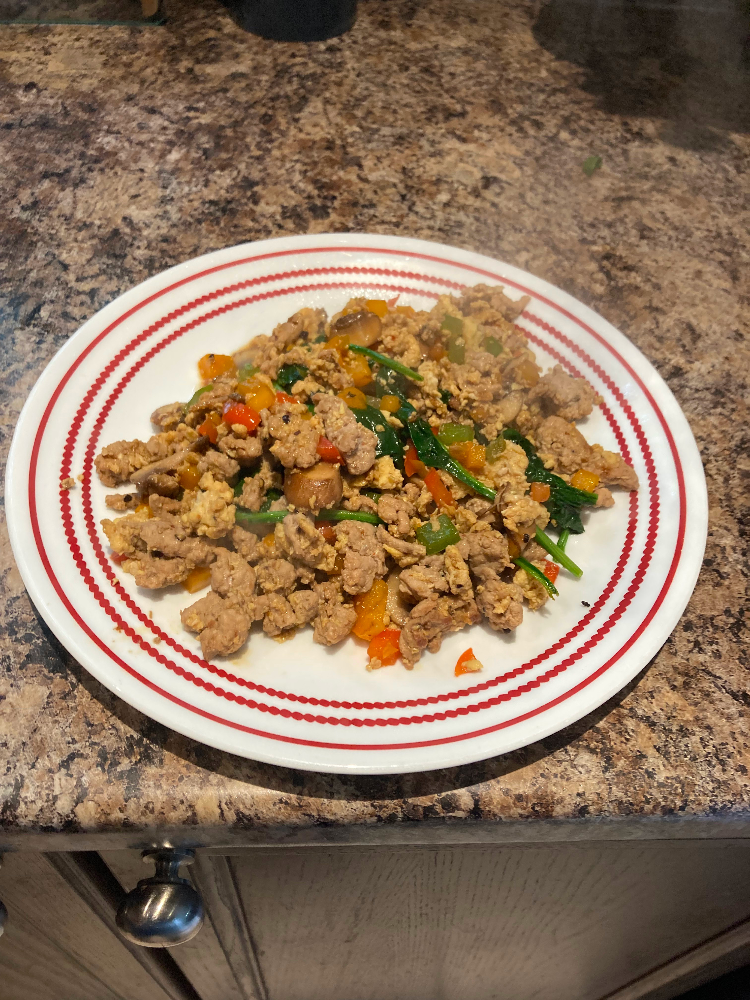

Turkey-Egg Fry

Me great gret great great great grandpapay's thrice removed Dog
Went to turkey farm. This turkey farm also sold 1 dish between 10am-12pm everyday
It was a Turkey-Egg fry, using the freshest of ingredients.
The recipie for this fry, has been passed down unchanged to me, and my descendats
Prepwork
- Dice a small bell pepper of your choice
- slice up a few mushrooms of your choice
- Season your ground turkey with salt, and pepper
Crack, and whisk 2 eggs into a bowl
- Cut up a handful of spinach
Frying the cook
- Add a glug of extra virgin olive oil to a large pan over medium-high heat
- Add your seasonsed ground turkey into the pan, breaking it up into small chunks
- Keep the turkey moving as it frys until it's browned all the way through
- Add your eggs into the pan, scrambling them into the meat
- Once the eggs are cooked to your liking, remove the meat and eggs, and add your veg
- Once the veggies are cooked to your liking, add back in your eggs, and meat
- pour a glug of Soy sauce into the pan, mix it in well with everything
- Once everything is incorporated, add your spinach and cover the pan with a lid
- When the spinach is wilted (about 45 secs- 1 min) remove the lid, and serve
Home